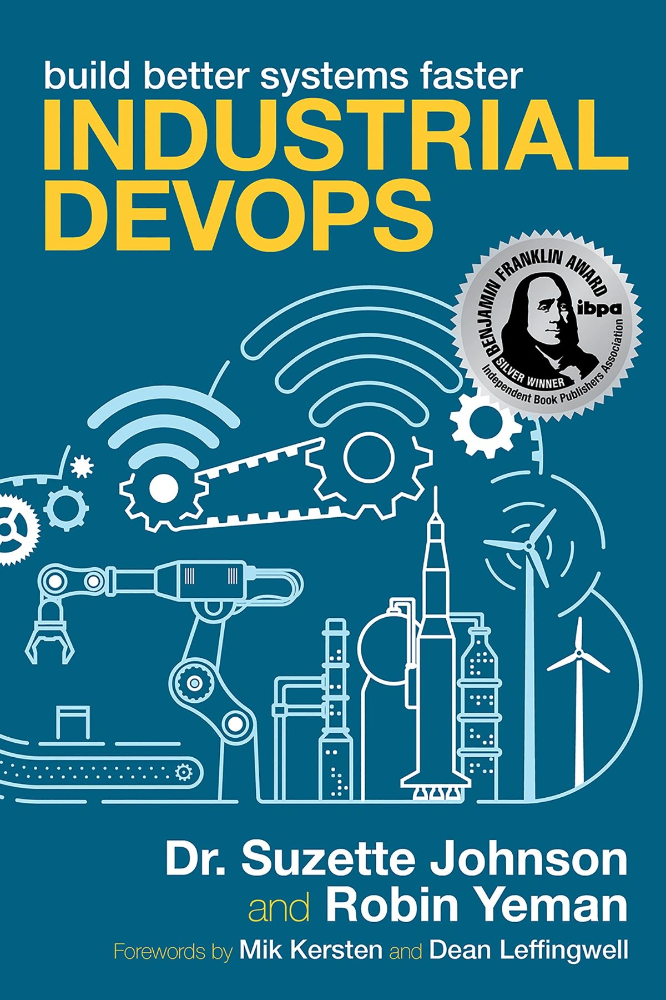

Industrial DevOps™ extends DevSecOps beyond software — bringing Lean, Agile, and DevSecOps to large-scale software/hardware systems environments.
Expertise spanning over twenty-eight years in software engineering with a focus on Digital Engineering, DevSecOps, and Agile to build large-scale, safety-critical, cyber-physical systems across multiple domains — from submarines to satellites.
Enterprise Lean-Agile strategy and transformation leader, author, and coach with a passion for promoting and implementing Industrial DevOps (Lean, Agile, DevOps) in large-scale software/hardware systems environments.
The award-winning guide to building better systems faster by extending DevSecOps principles beyond software into complex, cyber-physical domains.
